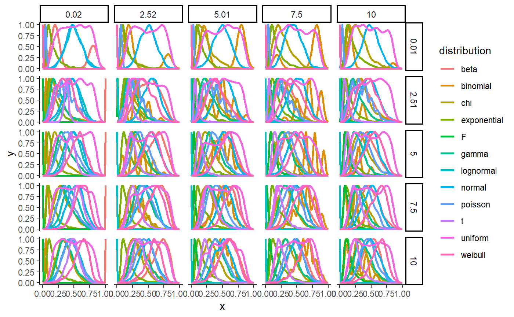

classify_distribution.RmdThe goal of this article is to create a machine learning model able to classify the distribution family of the data.
distributions <- data.frame()
size <- 1000
for(location in round(seq(0.01, 10, length.out = 5), digits=2)){
for(scale in round(seq(0.02, 10, length.out = 5), digits=2)){
x <- parameters::normalize(as.data.frame(density(rnorm(size, location, scale), n=100)))
x$distribution <- "normal"
x$location <- location
x$scale <- scale
distributions <- rbind(distributions, x)
x <- parameters::normalize(as.data.frame(density(rbeta(size, location, scale), n=100)))
x$distribution <- "beta"
x$location <- location
x$scale <- scale
distributions <- rbind(distributions, x)
x <- parameters::normalize(as.data.frame(density(rbinom(size, round(location)+1, scale/10^(nchar(round(scale)))), n=100)))
x$distribution <- "binomial"
x$location <- location
x$scale <- scale
distributions <- rbind(distributions, x)
x <- parameters::normalize(as.data.frame(density(rchisq(size, location, scale), n=100)))
x$distribution <- "chi"
x$location <- location
x$scale <- scale
distributions <- rbind(distributions, x)
x <- parameters::normalize(as.data.frame(density(rexp(size, scale), n=100)))
x$distribution <- "exponential"
x$location <- location
x$scale <- scale
distributions <- rbind(distributions, x)
x <- parameters::normalize(as.data.frame(density(rf(size, location, scale), n=100)))
x$distribution <- "F"
x$location <- location
x$scale <- scale
distributions <- rbind(distributions, x)
x <- parameters::normalize(as.data.frame(density(rgamma(size, location, scale), n=100)))
x$distribution <- "gamma"
x$location <- location
x$scale <- scale
distributions <- rbind(distributions, x)
x <- parameters::normalize(as.data.frame(density(rlnorm(size, location, scale), n=100)))
x$distribution <- "lognormal"
x$location <- location
x$scale <- scale
distributions <- rbind(distributions, x)
x <- parameters::normalize(as.data.frame(density(rpois(size, location), n=100)))
x$distribution <- "poisson"
x$location <- location
x$scale <- scale
distributions <- rbind(distributions, x)
x <- parameters::normalize(as.data.frame(density(rt(size, location, scale), n=100)))
x$distribution <- "t"
x$location <- location
x$scale <- scale
distributions <- rbind(distributions, x)
x <- parameters::normalize(as.data.frame(density(runif(size, location, location*2), n=100)))
x$distribution <- "uniform"
x$location <- location
x$scale <- scale
distributions <- rbind(distributions, x)
x <- parameters::normalize(as.data.frame(density(rweibull(size, location, scale), n=100)))
x$distribution <- "weibull"
x$location <- location
x$scale <- scale
distributions <- rbind(distributions, x)
}
}
ggplot(distributions, aes(x=x, y=y, colour=distribution)) +
geom_line(size=1) +
facet_grid(location ~ scale) +
theme_classic()
generate_distribution <- function(family="normal", size=1000, noise=0, location=0, scale=1){
if(family == "normal"){
x <- rnorm(size, location, scale)
} else if(family == "beta"){
x <- rbeta(size, location, scale)
} else if(family == "binomial"){
x <- rbinom(size, round(location)+1, scale/10^(nchar(round(scale))))
} else if(family == "chi"){
x <- rchisq(size, location, scale)
} else if(family == "exponential"){
x <- rexp(size, scale)
} else if(family == "F"){
x <- rf(size, location, scale+0.1)
} else if(family == "gamma"){
x <- rgamma(size, location, scale)
} else if(family == "lognormal"){
x <- rlnorm(size, location, scale)
} else if(family == "poisson"){
x <- rpois(size, location)
} else if(family == "t"){
x <- rt(size, location, scale)
} else if(family == "uniform"){
x <- runif(size, location, location*2)
} else if(family == "weibull"){
x <- rweibull(size, location, scale)
}
return(x)
}df <- data.frame()
for(distribution in c("normal", "beta", "binomial", "chi", "exponential", "F", "gamma", "lognormal", "poisson", "t", "uniform", "weibull")){
for(i in 1:2000){
size <- round(runif(1, 10, 2000))
location <- runif(1, 0.01, 10)
scale <- runif(1, 0.02, 10)
x <- generate_distribution(distribution, size=size, location=location, scale=scale)
x[is.infinite(x)] <- 5.565423e+156
x_scaled <- parameters::normalize(x, verbose=FALSE)
density_Z <- density(x_scaled, n=20)$y
# Extract features
data <- data.frame(
"Mean" = mean(x_scaled),
"SD" = sd(x_scaled),
"Median" = median(x_scaled),
"MAD" = mad(x_scaled, constant=1),
"Mean_Median_Distance" = mean(x_scaled) - median(x_scaled),
"Mean_Mode_Distance" = mean(x_scaled) - as.numeric(bayestestR::map_estimate(x_scaled, bw = "nrd0")),
"SD_MAD_Distance" = sd(x_scaled) - mad(x_scaled, constant=1),
"Mode" = as.numeric(bayestestR::map_estimate(x_scaled, bw = "nrd0")),
# "Range" = range(x),
"Range_SD" = diff(range(x)) / sd(x),
"Range_MAD" = diff(range(x)) / mad(x, constant=1),
"IQR" = stats::IQR(x_scaled),
"Skewness" = skewness(x_scaled),
"Kurtosis" = kurtosis(x_scaled),
"Uniques" = length(unique(x)) / length(x),
"Smoothness_Cor" = parameters::smoothness(density(x_scaled)$y, method="cor"),
"Smoothness_Diff" = parameters::smoothness(density(x_scaled)$y, method="diff"),
"Smoothness_Z_Cor_1" = parameters::smoothness(density_Z, method="cor", lag=1),
"Smoothness_Z_Diff_1" = parameters::smoothness(density_Z, method="diff", lag=1),
"Smoothness_Z_Cor_3" = parameters::smoothness(density_Z, method="cor", lag=3),
"Smoothness_Z_Diff_3" = parameters::smoothness(density_Z, method="diff", lag=3)
)
density_df <- as.data.frame(t(density_Z))
names(density_df) <- paste0("Density_", 1:ncol(density_df))
data <- cbind(data, density_df)
if(length(unique(x)) == 1){
data$Distribution <- "uniform"
} else{
data$Distribution <- distribution
}
df <- rbind(df, data)
}
# write.csv(df, "classify_distribution.csv", row.names = FALSE)
}# Data clearning
df <- na.omit(df)
infinite <- is.infinite(rowSums(df[sapply(df, is.numeric)]))
df <- df[!infinite, ]
# Data partitioning
trainIndex <- caret::createDataPartition(as.factor(df$Distribution), p=0.1, list = FALSE)
train <- df[ trainIndex,]
test <- df[-trainIndex,]
# Parameters
fitControl <- caret::trainControl(## 5-fold CV
method = "repeatedcv",
number = 5,
## repeated ten times
repeats = 10,
classProbs = TRUE,
returnData = FALSE,
trim=TRUE,
allowParallel = TRUE)
# Set up parallel
cluster <- makeCluster(detectCores() - 1) # convention to leave 1 core for OS
registerDoParallel(cluster)# Training
model_tree <- caret::train(Distribution ~ ., data = train,
method = "rpart",
trControl = fitControl)
model_rf <- caret::train(Distribution ~ ., data = train,
method = "rf",
trControl = fitControl)
model_nb <- caret::train(Distribution ~ ., data = train,
method = "naive_bayes",
trControl = fitControl)
stopCluster(cluster) # explicitly shut down the cluster# collect resamples
results <- resamples(list(
"DecisionTree" = model_tree,
"RandomForest" = model_rf,
"NaiveBayes"= model_nb
))
# summarize the distributions
summary(results)
# dot plots of results
dotplot(results)
# Sizes
data.frame("DecisionTree" = as.numeric(object.size(model_tree))/1000,
"RandomForest" = as.numeric(object.size(model_rf))/1000,
"NaiveBayes" = as.numeric(object.size(model_nb))/1000)model <- model_rf
# Performance
test$pred <- predict(model, test)
confusion <- confusionMatrix(data = test$pred, reference = as.factor(test$Distribution), mode = "prec_recall")
knitr::kable(data.frame("Performance" = confusion$overall))
# Prediction Table
knitr::kable(confusion$table / colSums(confusion$table), digits=2)
# Prediction Figure
perf <- as.data.frame(confusion$byClass)[c("Sensitivity", "Specificity")]
perf$Distribution <- gsub("Class: ", "", row.names(perf))
perf <- reshape(perf, varying = list(c("Sensitivity", "Specificity")), timevar = "Type", idvar = "Distribution", direction = "long", v.names = "Metric")
perf$Type <- ifelse(perf$Type == 1, "Sensitivity", "Specificity")
ggplot(perf, aes(x=Distribution, y=Metric, fill=Type)) +
geom_bar(stat = "identity", position = position_dodge(width = 0.9)) +
geom_hline(aes(yintercept=0.5), linetype="dotted") +
theme_classic() +
theme(axis.text.x = element_text(angle = 45, hjust = 1))
# Features
features <- caret::varImp(model, scale = TRUE)
plot(features)
# N trees
plot(model$finalModel, log="x", main="black default, red samplesize, green tree depth")df <- data.frame()
for(distribution in c("normal", "beta", "binomial", "chi", "exponential", "F", "gamma", "lognormal", "poisson", "t", "uniform", "weibull")){
for(i in 1:2000){
size <- round(runif(1, 10, 1000))
location <- runif(1, 0.01, 10)
scale <- runif(1, 0.02, 10)
x <- generate_distribution(distribution, size=size, location=location, scale=scale)
x[is.infinite(x)] <- 5.565423e+156
x <- parameters::normalize(x, verbose=FALSE)
# Extract features
data <- data.frame(
"SD" = sd(x),
"MAD" = mad(x, constant=1),
"Mean_Median_Distance" = mean(x) - median(x),
"Mean_Mode_Distance" = mean(x) - as.numeric(bayestestR::map_estimate(x, bw = "nrd0")),
"SD_MAD_Distance" = sd(x) - mad(x, constant=1),
"Range" = diff(range(x)) / sd(x),
"IQR" = stats::IQR(x),
"Skewness" = skewness(x),
"Kurtosis" = kurtosis(x),
"Uniques" = length(unique(x)) / length(x)
)
if(length(unique(x)) == 1){
data$Distribution <- "uniform"
} else{
data$Distribution <- distribution
}
df <- rbind(df, data)
}
}# Data clearning
df <- na.omit(df)
infinite <- is.infinite(rowSums(df[sapply(df, is.numeric)]))
df <- df[!infinite, ]
# Data partitioning
trainIndex <- caret::createDataPartition(as.factor(df$Distribution), p=0.1, list = FALSE)
train <- df[ trainIndex,]
test <- df[-trainIndex,]
# Set up parallel
cluster <- makeCluster(detectCores() - 1) # convention to leave 1 core for OS
registerDoParallel(cluster)# Training
model <- randomForest::randomForest(as.factor(Distribution) ~ ., data = train,
localImp = FALSE,
importance = FALSE,
keep.forest = TRUE,
keep.inbag = FALSE,
proximity=FALSE,
maxDepth=5,
maxBins=32,
minInstancesPerNode=1,
minInfoGain=0.0,
maxMemoryInMB=128,
ntree = 10)
stopCluster(cluster) # explicitly shut down the cluster# Performance
test$pred <- predict(model, test)
confusion <- confusionMatrix(data = test$pred, reference = as.factor(test$Distribution), mode = "prec_recall")
knitr::kable(data.frame("Performance" = confusion$overall))
# Prediction Table
knitr::kable(confusion$table / colSums(confusion$table), digits=2)
# Prediction Figure
perf <- as.data.frame(confusion$byClass)[c("Sensitivity", "Specificity")]
perf$Distribution <- gsub("Class: ", "", row.names(perf))
perf <- reshape(perf, varying = list(c("Sensitivity", "Specificity")), timevar = "Type", idvar = "Distribution", direction = "long", v.names = "Metric")
perf$Type <- ifelse(perf$Type == 1, "Sensitivity", "Specificity")
ggplot(perf, aes(x=Distribution, y=Metric, fill=Type)) +
geom_bar(stat = "identity", position = position_dodge(width = 0.9)) +
geom_hline(aes(yintercept=0.5), linetype="dotted") +
theme_classic() +
theme(axis.text.x = element_text(angle = 45, hjust = 1))
# Features
caret::varImp(model, scale = TRUE)# Initial size
as.numeric(object.size(model))/1000
# Reduce size
model <- strip(model, keep="predict", use_trim=TRUE)
model$predicted <- NULL
model$y <- NULL
model$err.rate <- NULL
model$test <- NULL
model$proximity <- NULL
model$confusion <- NULL
model$localImportance <- NULL
model$importanceSD <- NULL
model$inbag <- NULL
model$votes <- NULL
model$oob.times <- NULL
as.numeric(object.size(model))/1000
# Test
is.factor(predict(model, df))
is.matrix(predict(model, data, type = "prob"))| Package | Version | References |
|---|---|---|
| bayestestR | 0.2.0 | Makowski, D., Ben-Shachar M. S. & Lüdecke, D. (2019). Understand and Describe Bayesian Models and Posterior Distributions using bayestestR. CRAN. Available from https://github.com/easystats/bayestestR. DOI: 10.5281/zenodo.2556486. |
| caret | 6.0.84 | Max Kuhn. Contributions from Jed Wing, Steve Weston, Andre Williams, Chris Keefer, Allan Engelhardt, Tony Cooper, Zachary Mayer, Brenton Kenkel, the R Core Team, Michael Benesty, Reynald Lescarbeau, Andrew Ziem, Luca Scrucca, Yuan Tang, Can Candan and Tyler Hunt. (2019). caret: Classification and Regression Training. R package version 6.0-84. https://CRAN.R-project.org/package=caret |
| doParallel | 1.0.14 | Microsoft Corporation and Steve Weston (2018). doParallel: Foreach Parallel Adaptor for the ‘parallel’ Package. R package version 1.0.14. https://CRAN.R-project.org/package=doParallel |
| foreach | 1.4.4 | Microsoft and Steve Weston (2017). foreach: Provides Foreach Looping Construct for R. R package version 1.4.4. https://CRAN.R-project.org/package=foreach |
| ggplot2 | 3.1.1 | H. Wickham. ggplot2: Elegant Graphics for Data Analysis. Springer-Verlag New York, 2016. |
| iterators | 1.0.10 | Revolution Analytics and Steve Weston (2018). iterators: Provides Iterator Construct for R. R package version 1.0.10. https://CRAN.R-project.org/package=iterators |
| lattice | 0.20.38 | Sarkar, Deepayan (2008) Lattice: Multivariate Data Visualization with R. Springer, New York. ISBN 978-0-387-75968-5 |
| parameters | 0.1.0 | Makowski, D. & Lüdecke, D. (2019). The report package for R: Ensuring the use of best practices for results reporting. CRAN. Available from https://github.com/easystats/report. doi: . |
| report | 0.1.0 | Makowski, D. & Lüdecke, D. (2019). The report package for R: Ensuring the use of best practices for results reporting. CRAN. Available from https://github.com/easystats/report. doi: . |
| strip | 1.0.0 | Paul Poncet (2018). strip: Lighten your R Model Outputs. R package version 1.0.0. https://CRAN.R-project.org/package=strip |